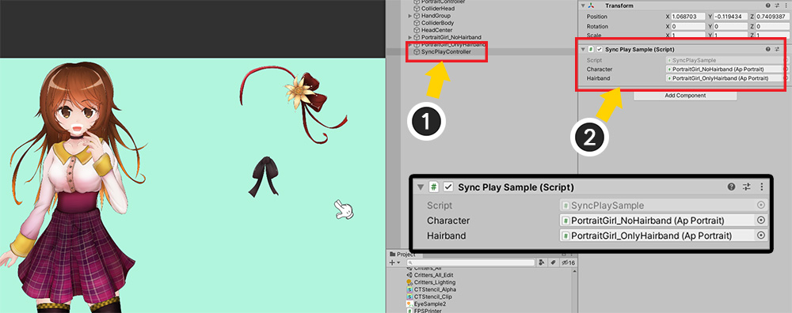
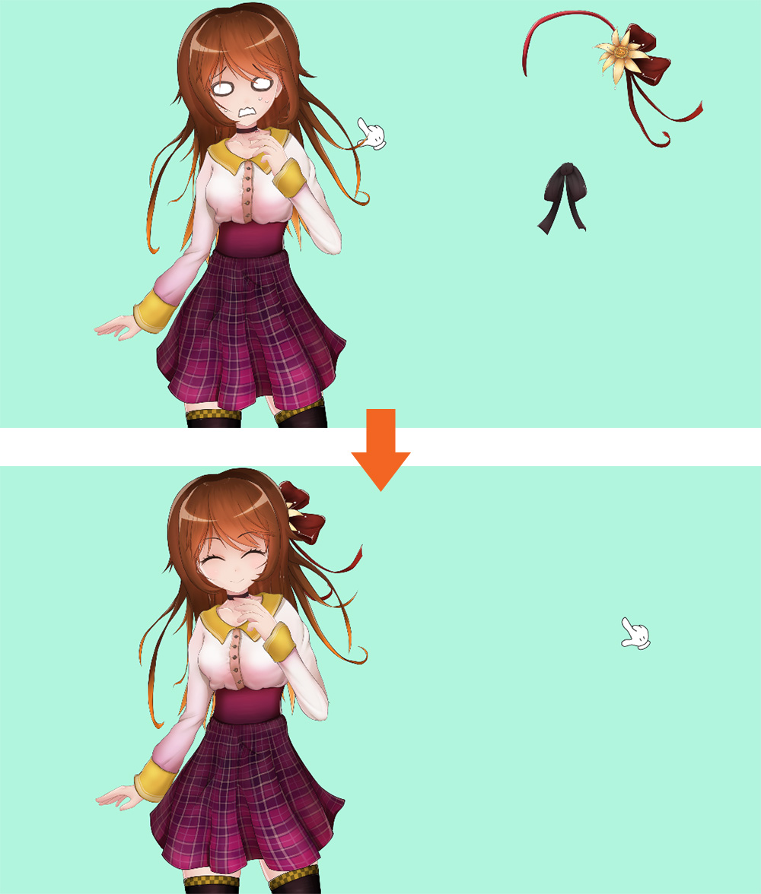
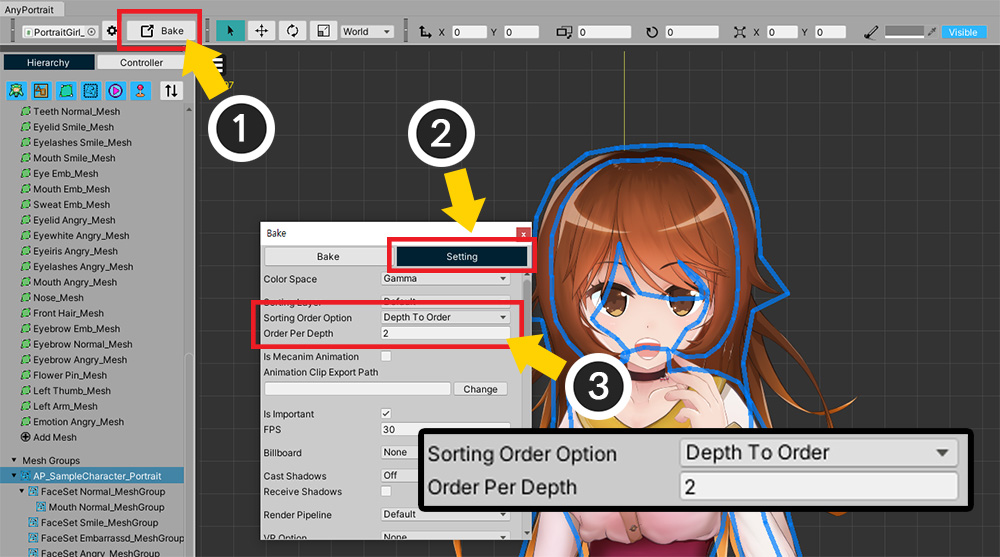
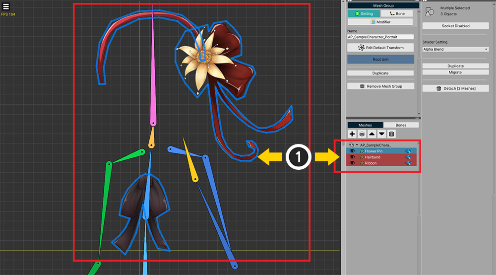
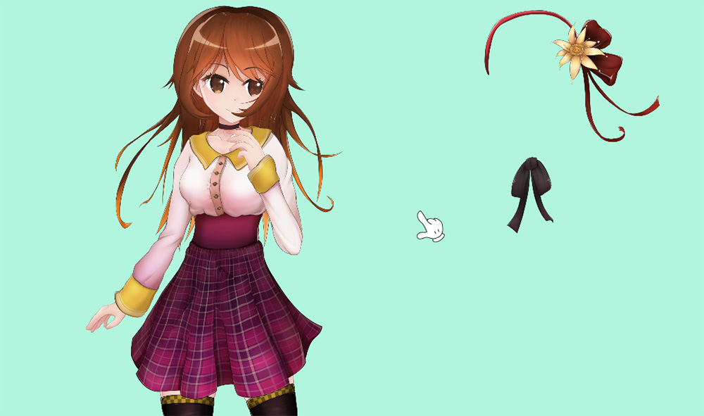
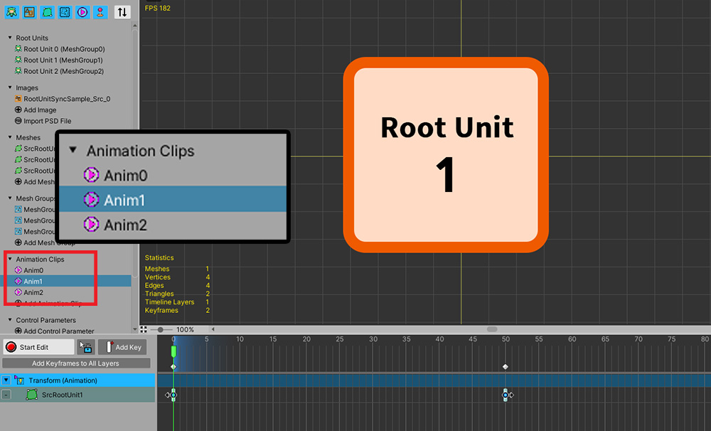
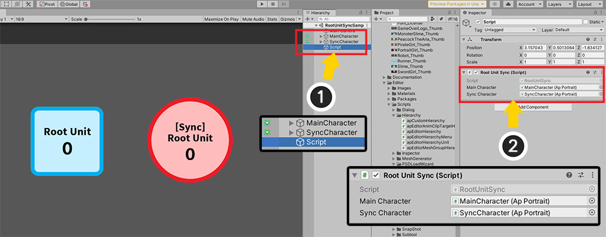
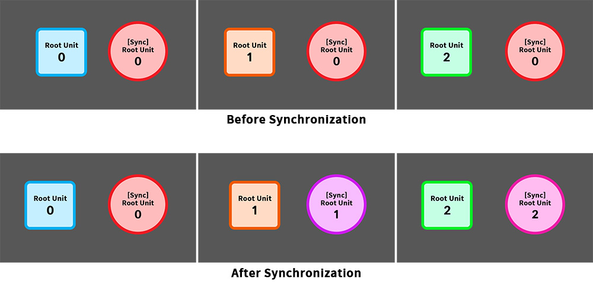

AnyPortrait > マニュアル > 他のキャラクターとの同期
他のキャラクターとの同期
1.3.4
ゲームでキャラクターの衣装や見た目を変えるカスタマイズ機能は、重要な要素です。
私たちは、画像を交換する方式（関連ページ）を紹介し、その後に多くのユーザーの方々に私達に多くのフィードバックをいただきました。
このページで扱う「同期」機能は、「他のキャラクターとの接続されてアニメーションを再生すること」です。
しかし、私たちのチームは、この機能のコンセプトが「カスタマイズ」に活用されることを期待しています。
このページは、「カスタマイズ」機能に適用されることに基づいて、「同期（Synchronize）」関数を使用する方法を説明します。
この機能についてのフィードバックをいただければ私たちは、このコンセプトをさらに拡張してさらに開発していくことです。

デモのキャラクターで、「ヘアバンドとリボン」（以下「ヘアバンド」）のみ別に分離したシーンを準備しました。
「キャラクター」のみアニメーションが動作するように作成し、「ヘアバンド」は「キャラクター」に同期するように作られてみましょう。

同期のためには、「アニメーション」と「制御パラメータ」が同じです。
「キャラクター」を開くと、制御パラメータがモディファイヤに登録されている状態です。

(1) 「キャラクター」は、「Idle、Smile、Angry」の3つのアニメーションを持っています。
(2) アニメクリップのFPSと長さを記憶してください。

「ヘアバンド」をエディタで開くと、同期される対象の「制御パラメータ」と同じ「制御パラメータ」が存在します。
また、制御パラメータに基づいてモディファイヤに移動できるように実装されている。
（ただし、ボーンは、同期対象ではないので、ボーンまで同じにする必要はありません。）

(1) アニメも同じように「Idle、Smile、Angry」の3つです。名前が異なる場合は同期されません。
(2) それぞれのアニメーションの長さとFPSも同期対象のそれと同じになります。
以下のスクリプトを作成して、「ヘアバンド」が「キャラクター」に同期するように作られてみましょう。
using UnityEngine;
using AnyPortrait;
public class SyncPlaySample : MonoBehaviour
{
public apPortrait character;
public apPortrait hairband;
void Update()
{
//Aキーを押すと、hairbandがcharacterに同期します。
if(Input.GetKeyDown(KeyCode.A))
{
hairband.Synchronize(character, true, true);
hairband.transform.position = character.transform.position;
}
//Sキーを押すと、hairbandの同期が解除されます。
if(Input.GetKeyDown(KeyCode.S))
{
hairband.Unsynchronize();
hairband.StopAll();
hairband.transform.position = new Vector3(10.0f, 0.0f, 0.0f);
}
}
}
「Synchronize」関数と「Unsynchronize」関数を使用して同期を有効または無効にすることができます。
「Synchronize」関数で「」アニメーション」や「制御パラメータ」を選択して同期することができます。
ここ2つの「true」を入れて、すべての同期を行うようにしました。
関数の詳細説明は、「関連ページ」を参照してください。

(1) 新しい「GameObject」を作成します。
(2) 作成したスクリプトを追加し、「キャラクター」と「ヘアバンド」をそれぞれ割り当てます。

ゲームを実行し、Aキーを押すと、「ヘアバンド」が「キャラクター」に付着し、アニメーションや制御パラメータが同期されて動くのを見ることができます。

しかし、「ヘアバンド」のメッシュのレンダリング順序が適切でないことを見ることができます。
スクリプトで「ヘアバンド」のメッシュのレンダリング順序を手動で設定する必要があります。

(1) 「キャラクター」を開き、「ヘアバンド」のメッシュがどこに位置すべきかを確認します。
「ヘアバンド」のメッシュがレンダリングされるべき順序よりも「すぐ後ろに位置するメッシュ」の名前を覚えてみましょう。

「キャラクター」のメッシュの「Sorting Order」が表示さ順によって異なる割り当てられるようにする必要があります。
(1) 「Bakeボタン」を押します。
(2) 「Settingタブ」を選択します。
(3) 「Sorting Order Option」を「Depth To Order」に変更し、「Order Per Depth」を「2」に設定します。
「Order Per Depth」が2以上でなければ、既存のメッシュの間に新たなメッシュを入れることができます。
設定が終わったら、Bakeを実行します。

(1) 「ヘアバンド」を開き、メッシュの名前をすべて覚えてみましょう。
先に記憶しておいたメッシュの名前を利用して、「Sorting Order」を指定するコードをスクリプトに以下のように追加します。
using UnityEngine;
using AnyPortrait;
public class SyncPlaySample : MonoBehaviour
{
public apPortrait character;
public apPortrait hairband;
void Update()
{
//Aキーを押すと、hairbandがcharacterに同期します。
if(Input.GetKeyDown(KeyCode.A))
{
hairband.Synchronize(character, true, true);
hairband.transform.position = character.transform.position;
//「Flower Pin」メッシは「Front Hair」メッシュよりも前にあります。
hairband.SetSortingOrder("Flower Pin", character.GetSortingOrder("Front Hair") + 1);
//「Ribbon」メッシは「Body」メッシュよりも前にあります。
hairband.SetSortingOrder("Ribbon", character.GetSortingOrder("Body") + 1);
//「Hairband」メッシは「Back Hair」メッシュよりも前にあります。
hairband.SetSortingOrder("Hairband", character.GetSortingOrder("Back Hair") + 1);
}
//Sキーを押すと、hairbandの同期が解除されます。
if(Input.GetKeyDown(KeyCode.S))
{
hairband.Unsynchronize();
hairband.StopAll();
hairband.transform.position = new Vector3(10.0f, 0.0f, 0.0f);
}
}
}

ゲームを再実行して、Aキーを押すと、現在「ヘアバンド」のメッシュが正常な位置に表示されていることを見ることができます。

Sキーを押すと、「Unsynchronize」関数によって同期が解除されるのを見ることができます。
ルートユニット（Root Unit）の同期
1.3.4
「Synchronize」関数を使用するとき、アニメーションを同期していない可能性があります。
しかし、もし、アニメーションを同期していなくても、ルートユニットが転換されることを同期しようとする場合があります。
制御パラメータを同期したり、ボーンを同期するときに特に必要な機能である。

まず、メインキャラクターです。
(1) 3つの「ルートユニット（Root Unit）」が登録されています。
(2) それぞれのルートユニットの画像は、上記のように数字で区別する簡単にしました。
(3) それぞれのルートユニットが実行されるように、3つの「アニメーションクリップ」が作成されています。



3つのアニメーションは、それぞれのルートユニットを対象としていますので、アニメーションを再生すると、上記のように該当のルートユニットに転換されます。

今回は、同期を行うキャラクターです。
同様に、3つのルートユニットがあります。
しかし、アニメーションがなく自分では、ルートユニットが切り替えはありません。
スクリプトを以下のように作成して対象のルートユニットが切り替わるように同期してみましょう。
using UnityEngine;
using AnyPortrait;
public class RootUnitSync : MonoBehaviour
{
//アニメーションが再生されているキャラクター
public apPortrait mainCharacter;
//メインキャラクターに同期をするキャラクター
public apPortrait syncCharacter;
void Start() { }
void Update()
{
//数字キーを入力すると、メインキャラクターのアニメーションが再生され、該当のルートユニットに切り替えます。
if(Input.GetKeyDown(KeyCode.Alpha1)) { mainCharacter.Play("Anim0"); }
if(Input.GetKeyDown(KeyCode.Alpha2)) { mainCharacter.Play("Anim1"); }
if(Input.GetKeyDown(KeyCode.Alpha3)) { mainCharacter.Play("Anim2"); }
//ルートユニットを同期します。
if(Input.GetKeyDown(KeyCode.A))
{
syncCharacter.Synchronize(mainCharacter, false, false, true);
}
//同期をオフにします。
if(Input.GetKeyDown(KeyCode.S))
{
syncCharacter.Unsynchronize();
}
}
}
「Synchronize」関数の引数の中で、「ルートユニットの同期」要求が「true」であることを確認してください。
注意
ルートユニット同期要求は、次の場合に動作しません。
- ルートユニットの数が1個以下、または、互いに数が異なる場合
- アニメーションが同期されている場合（アニメーションの同期は、ルートユニット同期機能が含まれています。）

完成したスクリプトをUnityシーンに配置してみましょう。
(1) 「MainCharacter」と「SyncCharacter」が生成されており、新しいGameObjectを作成上記のスクリプトを追加します。
(2) スクリプトの各apPortraitメンバーを適切に割り当てます。

現在のゲームを実行してみましょう。
メインキャラクターのアニメーションによって、ルートユニットが切り替わります。
同期をすれば、同期された文字も一緒にルートユニットが転換されることを見ることができます。